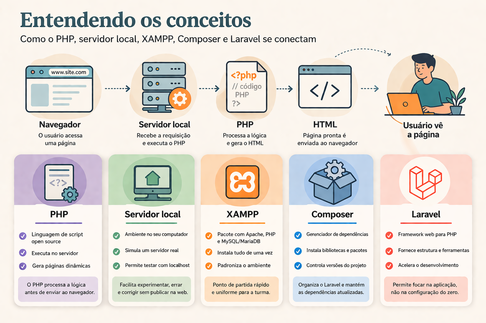
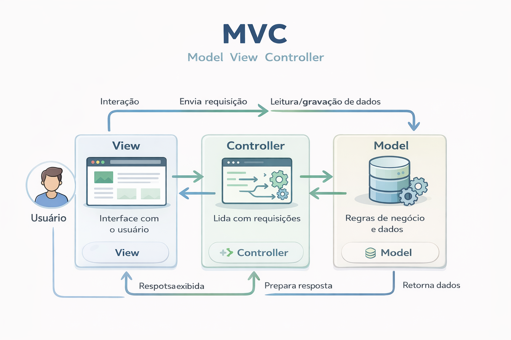
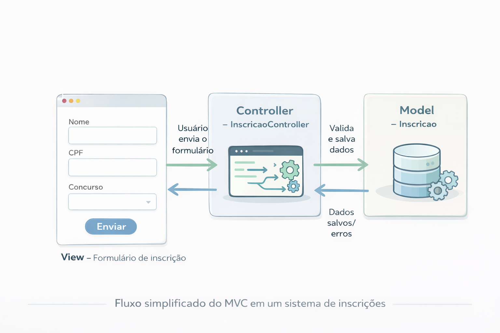
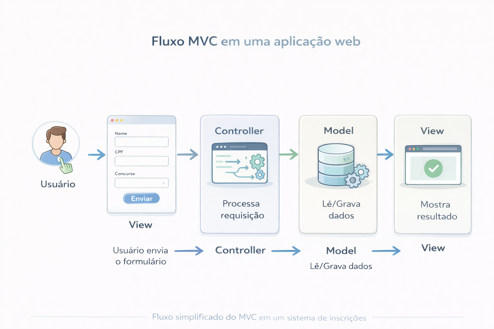
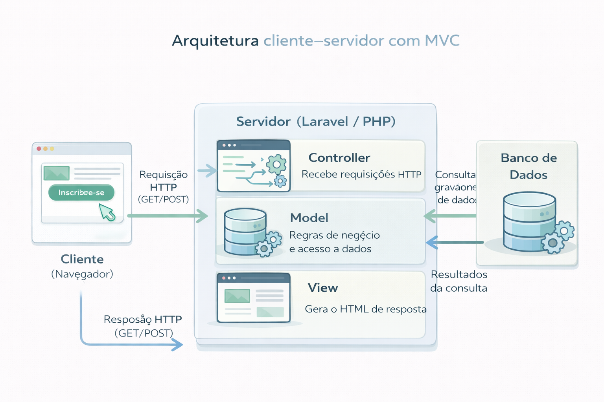

O que será construído
O projeto da disciplina será um sistema web de inscrições, com preenchimento de dados, envio de foto e arquivos, análise posterior da inscrição e acompanhamento do status pelo inscrito. Esse tipo de problema é bom para ensino porque envolve cadastro, validação, armazenamento, regras de negócio, autenticação, perfis de usuário e fluxo real de trabalho.
Como a turma de IHC está desenvolvendo o protótipo, o trabalho de desenvolvimento poderá partir de uma base visual e funcional já pensada, o que aproxima a disciplina do cenário profissional em que equipes de design e desenvolvimento colaboram. Isso também ajuda a discutir separação de papéis, interpretação de protótipos e transformação de interface em software funcional.
Conceitos que precisamos entender
O que é PHP
PHP é uma linguagem de script open source, muito usada em desenvolvimento web e especialmente adequada para gerar conteúdo no servidor. Em termos simples, o navegador pede uma página, o servidor executa o código PHP e devolve HTML pronto para o navegador mostrar.
O que é um servidor local
Servidor local é o ambiente instalado no próprio computador para simular o funcionamento de um servidor web real. Em vez de publicar o sistema na internet desde o início, é possível testar tudo em localhost, o que facilita experimentação, erros e correções.
O que é XAMPP
XAMPP é um pacote que reúne ferramentas importantes para desenvolvimento local, como Apache, PHP e MySQL/MariaDB. A vantagem pedagógica é reduzir a dificuldade inicial de instalação separada de cada item e oferecer um ponto de partida mais uniforme conforme sugestão do Kauan.
O que é Composer
Composer é o gerenciador de dependências do PHP. Ele instala bibliotecas, frameworks e pacotes necessários ao projeto, controla versões e permite que o Laravel seja criado e atualizado de maneira mais organizada.
O que é Laravel
Laravel é um framework web para PHP. Um framework fornece estrutura inicial, organização e ferramentas prontas para acelerar o desenvolvimento, permitindo que o foco da disciplina esteja mais no problema da aplicação do que em montar tudo do zero.
Passos para preparar o ambiente
Vídeo de apoio: instalação do ambiente
Se preferir acompanhar o passo a passo em vídeo, você pode assistir ao tutorial abaixo. Ele mostra, na prática, como instalar o XAMPP, configurar o PHP, preparar o Composer e criar o primeiro projeto Laravel no seu computador.
Motivo: ele centraliza Apache, PHP e banco de dados em um pacote simples. Relação com o restante do ambiente: sem PHP e servidor web configurados, o Laravel não terá base para rodar localmente.
Motivo: versões recentes do Laravel exigem versões modernas do PHP. Relação com o restante do ambiente: se o PHP estiver abaixo do necessário, o Composer pode falhar na criação do projeto ou instalar dependências incompatíveis.
Motivo: é ele quem baixa e organiza as dependências do projeto. Relação com o restante do ambiente: o Laravel depende do Composer para ser criado, atualizado e executado com suas bibliotecas.
Use
php -v e composer -V. Motivo: confirmar que o sistema reconhece os executáveis. Relação com o restante do ambiente: se o terminal não encontra PHP ou Composer, o projeto não poderá ser criado corretamente.Exemplo:
composer create-project laravel/laravel nome-do-projeto. Motivo: gerar uma aplicação base já estruturada. Relação com o restante do ambiente: nesse momento o Composer usa o PHP instalado para baixar o framework e montar a pasta do projeto.Exemplo:
cd nome-do-projeto e php artisan serve. Motivo: testar se a aplicação sobe em ambiente local. Relação com o restante do ambiente: aqui os estudantes percebem na prática a integração entre PHP, Composer e ferramentas internas do Laravel.Motivo: o sistema de inscrições precisará persistir dados. Relação com o restante do ambiente: a aplicação Laravel conversa com o banco por configuração do arquivo
.env, aproximando os estudantes de um fluxo profissional de configuração por ambiente.Como cada peça se conecta
| Elemento | Função | Ligação com os demais |
|---|---|---|
| PHP | Executa a lógica do sistema no servidor | É a linguagem sobre a qual o Laravel funciona |
| Apache / servidor local | Recebe requisições e entrega a aplicação | Permite acessar o sistema pelo navegador durante o desenvolvimento |
| Composer | Gerencia pacotes e dependências | Instala o Laravel e mantém bibliotecas do projeto |
| Laravel | Organiza o sistema com estrutura e recursos prontos | Usa PHP e depende do Composer para instalação e manutenção |
| Banco de dados | Armazena inscrições, usuários, documentos e status | Será conectado ao Laravel por configuração de ambiente |
| Arquivo .env | Guarda configurações locais do projeto | Separa dados sensíveis e parâmetros do código-fonte |
Entender a relação entre linguagem, servidor, gerenciador de dependências, framework e banco, ajudam resolver problemas de forma menos mecânica e mais consciente.

Imagem gerada pelo ChatGPT
Por que estudar PHP nesta disciplina
PHP é uma linguagem muito associada ao desenvolvimento web no lado do servidor e tem a vantagem de permitir entrada relativamente rápida para quem já conhece lógica, HTML e programação. Para fins didáticos, PHP é interessante pois permite entender a passagem do navegador para o servidor e a geração de páginas dinâmicas.
- Sintaxe acessível para quem está migrando de outras linguagens.
- Grande uso em aplicações web e vasto material de apoio.
- Integração natural com HTML, útil para páginas dinâmicas.
- Ecossistema maduro, com frameworks, bibliotecas e documentação.
- Boa porta de entrada para estudar backend, formulários, sessões e banco de dados.
- Materiais antigos disponíveis, podem confundir iniciantes.
- Diferenças entre ambientes podem gerar erros de configuração (o famoso "no meu computador funciona!").
- Parte do preconceito com a linguagem vem de projetos que são legados e ruins.
- Aprender backend exige também entender servidor, requisição e persistência.
Por que a escolha faz sentido na disciplina
Para um sistema de inscrições, o PHP se encaixa bem porque atua naturalmente com formulários, upload de arquivos, autenticação e persistência em banco, que são exatamente os elementos centrais do projeto. Além disso, teremos contato com uma tecnologia tradicional de desenvolvimento web.
Por que usar Laravel no projeto
Laravel fornece uma estrutura inicial sólida, com organização de rotas, views, validação, configuração por ambiente, integração com banco de dados e ferramental de linha de comando. Isso favorece a aprendizagem e fixação dos conceitos de orientação a objetos porque o projeto passa a ter entidades, camadas e responsabilidades visíveis.
Por que não desenvolver tudo em PHP puro
Fazer tudo “na mão” funciona, mas torna mais difícil discutir arquitetura, manutenção e evolução do sistema. O Laravel facilita a vida e é mais próximo de um ambiente real de desenvolvimento.
Entendendo o padrão MVC
Laravel segue o padrão MVC, isso quer dizer que a aplicação é organizada em três blocos principais: Model, View e Controller. A ideia central é separar responsabilidades para que o código fique mais claro, mais fácil de manter e mais fácil de testar.

Imagem gerada pelo ChatGPT
Separação de responsabilidades
O padrão MVC trabalha com o princípio de separação de responsabilidades. Em vez de misturar tudo no mesmo arquivo, cada parte da aplicação cuida de um tipo de tarefa. Isso ajuda você a localizar problemas, reaproveitar código e evoluir o sistema sem “quebrar” tudo a cada alteração.
O Model representa os dados e as regras de negócio. É a parte do sistema que sabe conversar com o banco de dados e que sabe o que pode ou não pode acontecer com essas informações. Em um sistema de inscrições, por exemplo, os Models podem representar Candidato, Edital, Técnico.
A View é a camada que cuida do que você enxerga na tela: HTML, CSS e, no caso do Laravel, os arquivos Blade. Ela é responsável por exibir os dados vindos do Model de forma organizada e amigável para o usuário.
O Controller faz a ponte entre o que o usuário pede e o que o sistema precisa fazer. Ele recebe as requisições (por exemplo, um formulário de inscrição enviado), conversa com os Models para ler ou gravar dados e decide qual View deve ser retornada com o resultado.
Em vez de ter um arquivo gigante misturando HTML, SQL e regras de negócio, o MVC incentiva que você divida o sistema em partes menores, com funções mais claras. Isso torna o código mais legível, mais fácil de testar e mais simples de trabalhar em equipe.

Imagem gerada pelo ChatGPT
O protótipo do sistema real ainda não foi finalizado, por isso temos apenas um exemplo aqui. A data de entrega do protótipo está prevista para 22/04.
Como o fluxo acontece na prática
Em uma aplicação web, o fluxo mais comum é o seguinte: você acessa uma página (View), interage com a interface (por exemplo, clicando em um botão ou enviando um formulário), essa ação gera uma requisição que chega ao Controller, o Controller conversa com os Models necessários, e, por fim, uma nova View é enviada de volta com o resultado.
No caso do sistema de inscrições, quando o candidato preenche uma inscrição e clica em “Enviar”, a requisição passa pela rota, chega ao Controller responsável por inscrições, que valida os dados, usa o Model para salvar no banco de dados e, então, escolhe uma View para mostrar se deu tudo certo ou se há algo a corrigir no formulário.

Imagem gerada pelo ChatGPT
Benefícios os desenvolvedores
-
>Facilidade para localizar onde está um problema (na View, no Controller ou no Model).
>Maior organização quando várias pessoas trabalham no mesmo projeto.
>Possibilidade de reaproveitar Views com dados diferentes ou Models em telas diferentes.
>Código mais preparado para evolução, manutenção e testes automatizados.
Ao longo da disciplina, o objetivo é que você consiga reconhecer claramente onde cada parte do seu código se encaixa nesse padrão. Isso é útil não só em PHP e Laravel, mas também em outras tecnologias que organizam a aplicação de forma parecida.
Como o sistema funciona em cliente–servidor
O sistema de inscrições será executado em uma arquitetura do tipo cliente–servidor. Isso significa que existe um lado responsável por mostrar as telas e receber as ações do usuário (cliente, normalmente o navegador) e um lado responsável por processar as requisições, aplicar regras de negócio e conversar com o banco de dados (servidor, onde o Laravel está rodando).
Em termos práticos, você acessa o sistema pelo navegador, o navegador envia uma requisição HTTP para o servidor Laravel, o servidor executa o código PHP, acessa o banco de dados quando preciso e devolve uma resposta (normalmente uma página HTML) para o navegador exibir.

Imagem gerada pelo ChatGPT
Fluxo passo a passo em uma inscrição
Veja um exemplo simplificado de como o sistema se comporta quando o candidato realiza uma inscrição, nessa arquitetura cliente–servidor.
-
O candidato acessa a página de inscrição.
No navegador, digita ou clica no endereço da página de inscrição. O navegador envia uma requisição HTTP (método GET) para o servidor. -
O servidor Laravel recebe a requisição.
O Laravel identifica a rota configurada para aquela URL e chama o Controller correspondente (por exemplo,InscricaoController@create), que decide qual View deve ser exibida. -
Uma View é enviada para o navegador.
O servidor renderiza um arquivo *.blade.php com o formulário de inscrição (View) e devolve o HTML na resposta HTTP. O navegador exibe essa página para o candidato -
O candidato preenche o formulário e envia.
Ao clicar em “Enviar”, o navegador manda uma nova requisição HTTP (agora normalmente POST) para o servidor, com todos os dados do formulário e os arquivos anexados. -
O Controller processa os dados.
O Controller responsável pela ação (por exemplo,InscricaoController@store) recebe a requisição, valida os campos, verifica regras de negócio e, se estiver tudo certo, chama os Models necessários para salvar a inscrição no banco de dados. -
Os Models conversam com o banco de dados.
Os Models (comoInscricao,Usuario,Edital) usam o Eloquent para criar ou atualizar registros no banco de dados, registrando os dados da inscrição e os caminhos dos arquivos enviados. -
O servidor monta a resposta.
Depois de salvar ou encontrar um erro, o Controller escolhe qual View devolver: uma página de sucesso com a confirmação da inscrição ou o mesmo formulário com mensagens de erro nos campos que precisam ser corrigidos. -
O navegador exibe o resultado.
O navegador recebe o HTML na resposta e exibe a tela de confirmação ou o formulário com os erros. Você vê o resultado da ação, mas todo o processamento interno aconteceu no servidor.
Ligando isso com os conceitos da disciplina
Na prática, a arquitetura cliente–servidor se combina com o padrão MVC da seguinte forma: o cliente (navegador) é responsável pela interação com o candidato; o servidor Laravel organiza o código em Model, View e Controller; e o banco de dados guarda de forma persistente as informações do sistema de inscrições
Ao longo do projeto, cada vez que você criar uma rota, um Controller ou um Model, estará reforçando essa ideia de que o cliente faz o pedido, o servidor decide o que fazer e responde, e o banco de dados fornece a memória de longo prazo para a aplicação.
Por que trocar de linguagem pode ser interessante
Mudar de linguagem em uma disciplina não significa abandonar o que já foi aprendido; significa testar o que é fundamento e o que era apenas costume. Quando você percebe que variáveis, estruturas de controle, funções, classes, objetos, formulários, banco e arquitetura reaparecem em outra linguagem, o aprendizado ganha profundidade e se torna mais flexível.
Essa troca também tem valor formativo porque desloca o foco da memorização de sintaxe para a compreensão de conceitos. Que é o que nos importa na disciplina! Em outras palavras, você deixa de pensar “como faço isso em linguagem X?” e passa a pensar “qual problema precisa ser resolvido e quais recursos essa linguagem oferece?”.
Como o projeto pode contribuir com a vida profissional?
Do ponto de vista profissional, esse projeto conversa com situações comuns do mercado: sistemas administrativos, cadastros, análise documental, status de processos e painéis de acompanhamento. Mesmo que você futuramente mude de stack, a experiência de construir esse tipo de solução continua valiosa e os conceitos serão os mesmos.
Apresentando Scrum de forma simplificada
Scrum é uma metodologia ágil baseada em ciclos curtos de trabalho chamados Sprints. Em vez de tentar construir o sistema inteiro de uma vez, a equipe divide o projeto em partes menores, planeja prioridades, executa uma etapa, revisa o resultado e então segue para a próxima.
Conceitos centrais
- Backlog: lista priorizada do que o produto precisa ter.
- Planning: organização das atividades de acordo com a complexidade, prioridade e estimativas.
- Sprint: período curto de desenvolvimento com objetivo definido.
- Entrega incremental: ao final de cada Sprint, algo funcional deve existir e ser entregue.
- Revisão: momento de olhar o que foi construído e ajustar rumos.
- Melhoria contínua (retrospectiva): aprender com erros e refinar o processo.
Por que Scrum combina com a disciplina
Scrum ajuda a compreender que sistemas reais nascem por evolução e negociação, não por implementação linear e isolada. Além disso, a divisão em sprints favorece planejamento pedagógico, checkpoints claros e avaliação das entregas concretas.
Plano das aulas
Apresentação do ambiente, do papel do PHP, do motivo da escolha de PHP e Laravel, da visão geral do projeto e da metodologia de desenvolvimento com Scrum.
Aprofundamento em PHP: sintaxe básica, execução no servidor, integração com HTML, variáveis, estruturas e primeiras noções para preparar a entrada no framework.
Início do desenvolvimento do projeto, já com foco em etapas, backlog, sprints e entregas progressivas orientadas pelo protótipo da turma de IHC.
Vídeo de apoio para instalação
Orientação indicada: assistir ao vídeo de instalação recomendado. A ideia é padronizar o processo para aumentar a chance de sucesso na configuração do XAMPP, do Composer e da criação do projeto Laravel.
Resumo em vídeo do ambiente e do projeto
Vídeo gerado com o NotebookLM